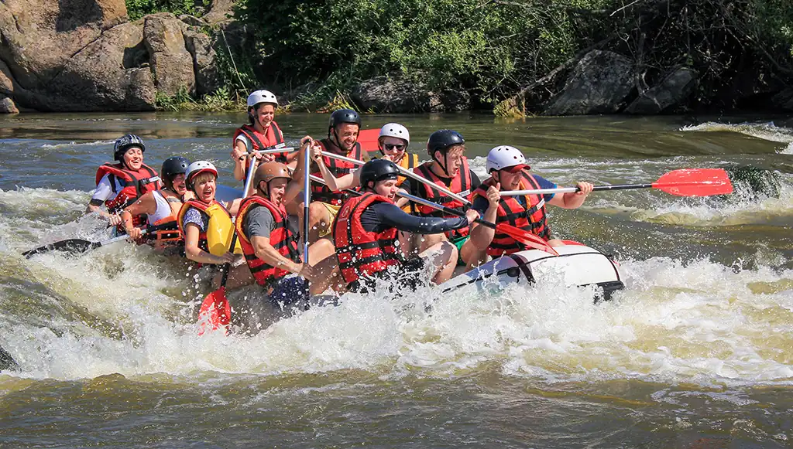
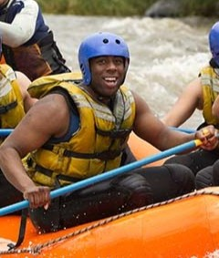

White Water Rafting

At White Water Rafting, we live for the splash. Our motto is simple: "Paddle
hard, stay safe, and
respect the river." We are driven by a singular purpose—to push you out
of your comfort
zone and into an unforgettable outdoor adventure, guided by absolute pros who
treat every guest like
family.
History
Founded in 1995 by two broke river guides with nothing but an old pickup truck
and a faded blue
raft, White Water Rafting started as a passion project on the banks of the
SuperAmazing River. What began as a
word-of-mouth secret for local thrill-seekers quickly grew into the region's
premier outfitter.
Today, three decades and over 50,000 happy paddlers later, our fleet looks a lot
newer, but our
mission remains exactly the same: to share the wild magic of the river with
anyone brave enough to
grab a paddle.